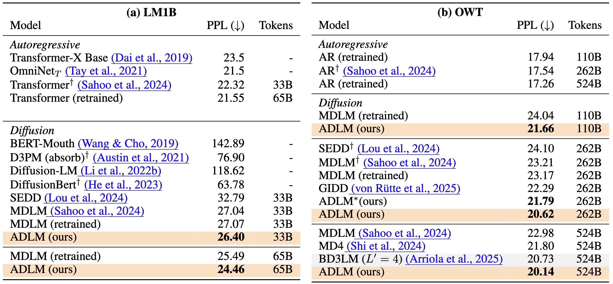
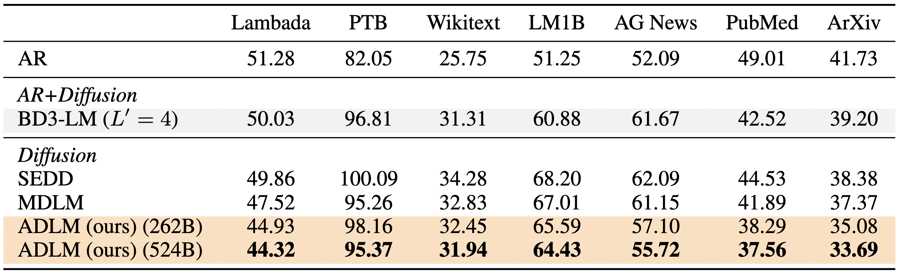
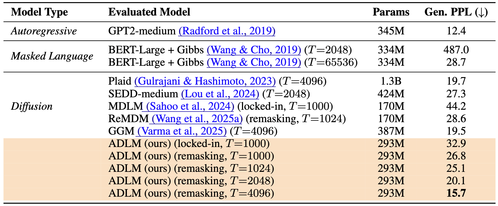

Anchored Diffusion Language Model
Litu RoutConstantine Caramanis Sanjay Shakkottai
The University of Texas at Austin
NeurIPS 2025
[Paper]
[ArXiv]
[Code]
[Slides]
[Model]

Anchored Diffusion Language Model (ADLM).
During inference, ADLM unmasks tokens in two stages.
Stage 1 - Anchor Transformer: produces anchor predictions whose support is skewed toward
important tokens for each mask position.
Stage 2 - Denoising Transformer: conditions on those anchors to recover the remaining tokens.
Anchor predictions help uncover key tokens early by lowering the anchor-conditional entropy and guiding more
accurate denoising.
Abstract
We study the problem of posterior sampling using pretrained discrete diffusion foundation models, aiming to
recover images from noisy measurements without retraining task-specific models. While diffusion models have
achieved remarkable success in generative modeling, most advances rely on continuous Gaussian diffusion. In
contrast, discrete diffusion offers a unified framework for jointly modeling categorical data such as text and
images. Beyond unification, discrete diffusion provides faster inference, finer control, and principled
training-free Bayesian inference, making it particularly well-suited for posterior sampling. However, existing
approaches to discrete diffusion posterior sampling face severe challenges: derivative-free guidance yields sparse
signals, continuous relaxations limit applicability, and split Gibbs samplers suffer from the curse of
dimensionality. To overcome these limitations, we introduce Anchored Posterior Sampling (APS) formasked diffusion
foundation models, built on two key innovations—quantized expectation for gradient-like guidance in discrete
embedding space, and anchored remasking for adaptive decoding. Our approach achieves state-of-the-art performance
among discrete diffusion samplers across linear and nonlinear inverse problems on the standard benchmarks. We
further demonstrate training-free stylization and text-guided editing using our sampler.
Contributions
- We propose ADLM, a novel two-stage diffusion language model that improves the prediction of masked tokens
through anchor-guided denoising (§3). We derive an anchored evidence lower bound to train ADLM in an end-to-end
fashion, proving improved sample complexity and better likelihood modeling in a DAG model (§4).
- ADLM achieves lower test perplexities than prior DLMs on LM1B and OWT, narrowing the gap with AR models (§5).
Anchoring generalizes better in zero-shot evaluation, improving perplexity on OOD tasks such as PubMed and
ArXiv, outperforming both MDLM and AR baselines (§5.1).
- We demonstrate the benefits of anchoring using two different samplers: (a) locked-in (Sahoo et al., 2024) and
(b) remasking (Wang et al., 2025a) samplers. With remasking sampler, ADLM outperforms AR models in human-like
text generation measured by MAUVE score (§5.1).
- Beyond diffusion, we integrate our anchoring mechanism into AR models, which leads to a novel reasoner that
supplements conventional chain-of-thought. Our results show improvements in nexttoken prediction and supervised
fine-tuning on Math (GSM8K (Cobbe et al., 2021)) and logical reasoning (ProntoQA (Saparov & He, 2023) and ProsQA
(Hao et al., 2024) (§5.2)) tasks.
Experiments: Anchored Diffusion Language Model
Generative Modeling
Test perplexities (PPL↓) on LM1B and OWT. †Reported in (Sahoo et al., 2024). Bold: Best diffusion
method. We retrain AR and MDLM to match performance reported in original papers. Our method outperforms
previous diffusion language models using the same number of training tokens.

Generated Text Quality
GPT2-Large perplexities (PPL; ↓) on OWT (524B tokens). We evaluate ADLM with the locked-in and remasking samplers
each with 1000 steps.
Zero-shot Downstream Evaluation
Zero-shot validation perplexities (↓) of models trained on 524B tokens from OWT. ADLM achieves a new
state-of-the-art among diffusion language models and outperforms autoregressive (AR) models on three benchmarks:
Lambada, PubMed, and ArXiv. All models use 1024 NFEs.

Comparison of Size and Performance
Generative perplexities evaluated over 1024 unconditional generations using GPT2Large (774M params) as the
evaluation model. ADLM significantly outperforms prior masked and diffusion language models under comparable
sampling configurations. Notably, it surpasses Plaid (Gulrajani & Hashimoto, 2023) while using only ∼20% of the
parameters, and nearly matches the performance of GPT2-medium despite having ∼50M fewer parameters.

Experiments: ADLM with Remasking Sampler
Evaluation of sample quality using the ADLM with remasking sampler (Wang et al., 2025a) on OWT. ADLM†
outperforms state-of-the-art masked diffusion and flow-matching methods. For T = 2048 and T = 4096, ADLM
surpasses AR in MAUVE score (measures human-like text).
Anchored diffusion becomes the first diffusion language model (DLM) to outperform autoregressive LLMs in terms
of MAUVE score, while also significantly narrowing the gap in generative perplexity (measured by GPT2-Large)
and achieving comparable natural language diversity (measured by entropy).
Anchored Auto-Regressive Models
Standard AR Training
Training of standard autoregressive (AR) models. A neural network is trained to predict the next token using
causal attention (leftto-right context). All tokens contribute equally to the training loss, and the model treats
the sequence uniformly without structural guidance.
Anchored AR Training
Training of anchored autoregressive (A2R) models. An anchor network first identifies important tokens (e.g.,
‘cat’, ‘dog’ shown in blue), which are supervised via an auxiliary anchor loss. A lightweight LLM is then trained
to predict the next token based on anchored predictions.
Experiments: Anchored Auto-Regressive Models
Generative Modeling
Anchoring improves autoregressive modeling on OWT. Test perplexities (PPL; ↓) for standard AR models and our
anchored variant (A2R) at various training scales. † Results from (Sahoo et al., 2024). A2R consistently improves
perplexity by introducing a two-stage prediction process: anchor tokens are first predicted, then used to guide
next-token prediction.
Downstream Evaluation
Accuracy (%) on Math and Logical Reasoning. ACoT improves the performance of prior (continuous) latent reasoning
methods despite using the same multi-stage training setup as COCONUT. † indicates the results reported in COCONUT.
Out-of-Order Reasoning using Anchored Chain-of-Thought
Supervised Finetuning using Anchor Tokens ([ANT])
Results on Math: GSM8K
A key insight from Question 1 is that standard CoT processes the question in a purely left-to-right manner. It
computes 16 - 3 - 4 = 9, and then 9 * 2 = 18, following the order in which quantities appear in the question. In
contrast, ACoT introduces [ANT] to capture important tokens, which allows it to reason more globally.
Specifically, ACoT first computes 3 + 4 = 7 to aggregate all consumption before subtracting from the total (16 - 7
= 9), a pattern more aligned with human intuition. This demonstrates how anchoring enables a “look-ahead” planning
behavior, in contrast to the left-to-right decoding bias of standard CoT.
Anchoring enables a “look-ahead” planning behavior, which is in contrast to the commonly observed
left-to-right decoding bias of standard chain-of-thought (CoT) reasoning.
Results on Logic: ProntoQA
Examples of logical reasoning tasks with symbolic reasoning traces from ProntoQA (Saparov & He, 2023). Each row
shows the input question, groundtruth reasoning trace (CoT), answer, the model’s generated output sequence, and
the extracted final answer. CoT, COCONUT, and ACoT share nearly identical training setups, with the only
distinction being the use of anchor tokens in ACoT and continuous thoughts in COCONUT. Our model implicitly
reasons through anchoring tokens ([ANT]) to infer logical relationships.
While standard multi-stage training in COCONUT leads to a marginal improvement from 98.8% (CoT) to 99.8%, our
anchoring mechanism further enhances performance. By incorporating explicit supervision through [ANT], ACoT
achieves a perfect accuracy of 100% on this relatively easier benchmark, demonstrating the effectiveness of
anchoring in logical reasoning.
Results on Logic: ProsQA
Examples of logical reasoning tasks with symbolic reasoning traces from ProsQA (Hao et al., 2024). Each row shows
the input question, groundtruth reasoning trace (CoT), answer, our model’s generated output sequence, and the
extracted final answer. Our model implicitly reasons through anchoring tokens ([ANT]) to infer logical
relationships. In this experiment, we employ the gradual CoT removal scheme used in prior works (Deng et al.,
2024; Hao et al., 2024) to demonstrate the reasoning ability in the anchored latent space without producing word
tokens.
While standard multi-stage training in COCONUT leads to a marginal improvement from 98.8% (CoT) to 99.8%, our
anchoring mechanism further enhances performance. By incorporating explicit supervision through [ANT], ACoT
achieves a perfect accuracy of 100% on this relatively easier benchmark, demonstrating the effectiveness of
anchoring in logical reasoning.
Samples Generated Using ADLM
Sampling Strategy: Remasking sampler with 4096 sampling steps
Note:
The generated text demonstrates strong discourse-level coherence, well-structured paragraphs, and natural
transitions between topics. For instance, the model begins with a detailed sports commentary and transitions
smoothly into a socio-political news report. These shifts are logically segmented with paragraph-level breaks and
consistent timelines (e.g., 18:00 PST, 30:00 PST), giving the impression of human-authored journals. This
qualitative improvement aligns with the quantitative results reported in Table 3, where ADLM achieves the highest
MAUVE score among existing DLMs.
<|endoftext|> were pretty good in that regard. Dwight Howard chipped in 15 points, and who’s to argue that
defense doesn’t deserve a stat of the award?
Stephen Curry, who was on the floor as soon as I got there, finished with 27 points. Wesley Matthews put in a
great effort as well.
Washington (Curry 30-31, Wall 80-78, Wall 82-7)
I listened to more of this game than originally planned. The Wizards took control of the game when Otto Porter
scored 22 points.
Takeaways:
The Wizards took control of the game during the first quarter, mostly courtesy of Dennis Schroder and Shaun
Livingston. In the second minute, Stephen Curry hit a perfect layup that bounced to the hoop for a dunk, Durant
scored two quick points to make it 15-7 with about seven minutes left, and in the third minute Jameer Nelson hit a
layup in the corner from range to make it 18-9.
18:00 PST
Wall and Marcus Thornton each dribbled their way through traffic and made two threes, the first by Andre Drummond
with three minutes left to record his 10th career triple-double, and the second by Kevin Durant with five minutes
left. However, both shots were blocked at the basket. Kevin Durant missed most of the rest of it with an ankle
injury, and Austin Rivers, getting a last-second shot off on him pretty badly, tried to knock the ball down, but
couldn’t as the ref just waved it back. Then Rivers shot, then Thornton drove his way in front of Durant, and Wall
had to do a reverse dribble move to knock Curry’s first shot free. This was probably the highlight of the game;
the defense wasn’t matched with the offense very well against the Thunder from here on out.
Halftime:
Oklahoma City gave up 10 points for coming up in the final minute, and Zach LaVine came off the bench. In the
fourth minute Russell Westbrook ran in a low drive to post up screen while the ball was on the floor, but with 10
seconds left in the game, Zach LaVine stepped onto the floor and slammed the ball in the basket for the bucket.
30:00 PST
Tony Allen was brought in for Monta Ellis, and he just could not start. He tried his way to the corner for a
3-pointer, but he was shot. Nerlens Noel quickly got up and knocked it back down low, and Allen ran back into the
stands of the arena, knocking the ball down high and out of bounds.
Oklahoma City’s bench never stopped suiting as the game went on. This is a team that is making a leap in the NBA,
with DeMarcus Cousins and Chauncey Billups leading the way, and it’s just the right thing to do in such a crazy
situation.
<|endoftext|>
(CN) Hundreds of Seattle residents Tuesday marched to Columbia City to protest the construction of Tesla’s new
headquarters in one of the largest nationwide demonstrations in years, as Seattle police clashed with student
protesters at a park near Washington State University.
Thousands of the student marchers gathered at around 2:30 p.m. in Seattle, capital of Western Washington as they
confronted riot police carrying rocks, rocks bottles, and gas masks. Large demonstrations of this kind are nearly
every weekly in the sprawling city. Tesla CEO Elon Musk said he didn’t know how much the new headquarters could
cost him but that it would be enough for the car company to complete its plans. However, the cost estimate is
unknown. In the debating point, the city of Seattle, a state infrastructure agency, the Metropolitan
Transportation Authority and the thousand-plus protesters wait for a judge’s approval to assess possible damages.
Tesla’s headquarters is the second-tallest office building proposed in Greater Snohomish County. It is planned on
the Seattle Pacific University campus. Tesla also has a 14-story supertall building on Mercer Street that would
also include mixed-use office space. There is also construction of a 50,000 square foot garage that is expected to
open next year. There is also a parking garage on the 8.7 acre property. No residences are listed in Tesla’s
property plan approved by federal agencies.
Tesla and company officials are expected to have the newest office building at 240,000 square feet made for public
access public, once it’s slated for completion. The company is already in court for a waiver that allows it to
maintain the building because it is in a park. A lawyer for the company said on April 27 that a judge in Seattle
is expected to rule on the waiver, which would allow the building to be enabled. This is one of several lawsuits
that have emerged in recent weeks since Tesla’s new headquarters was announced in March. Across the U.S
<|endoftext|>
BibTeX
@article{rout2025anchored,
title = {Anchored Diffusion Language Model},
author = {Rout, Litu and Caramanis, Constantine and Shakkottai, Sanjay},
booktitle = {arXiv preprint},
year = {2025},
url = {https://arxiv.org/pdf/2505.18456}
}
Acknowledgements:
This research has been supported by NSF Grants 2019844 and 2112471, the UT Austin Machine Learning Lab, and
computing support on the Vista GPU Cluster through the Center for Generative AI (CGAI) and the Texas Advanced
Computing Center (TACC) at UT Austin.